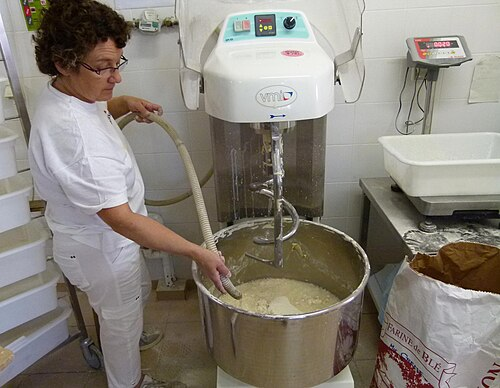
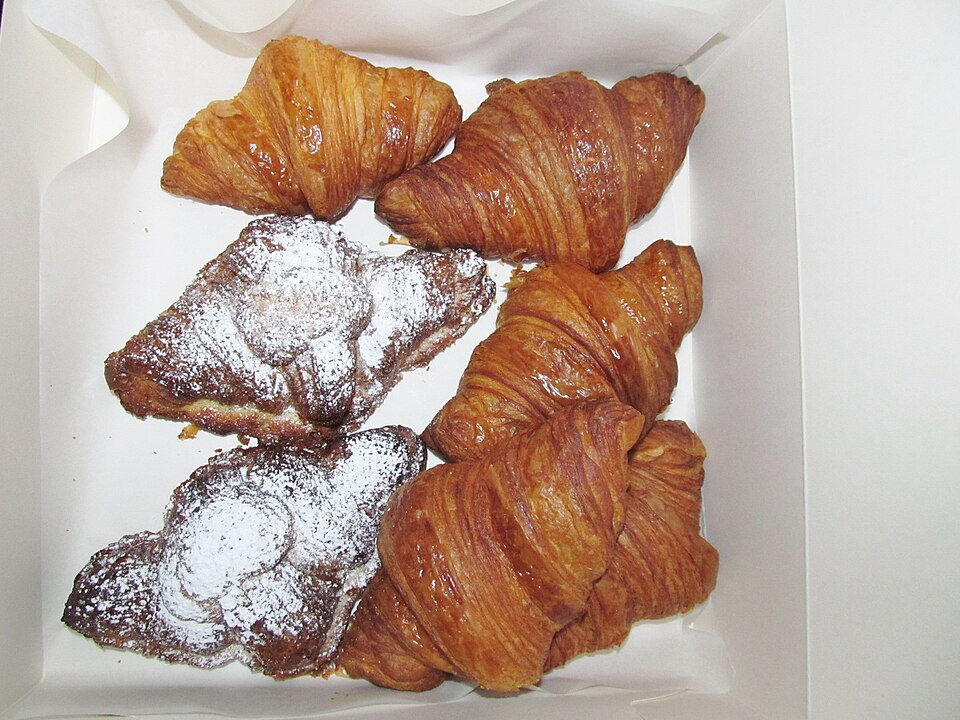
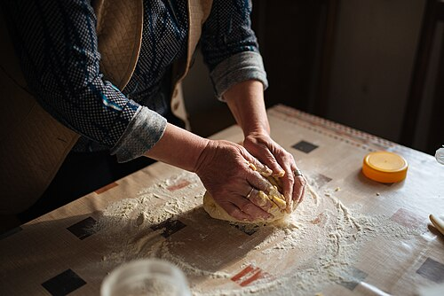
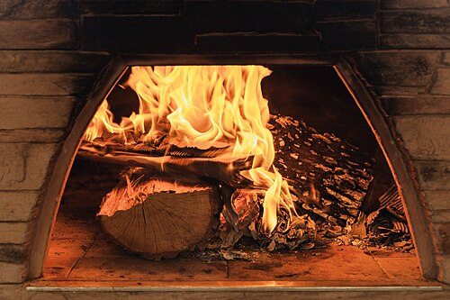
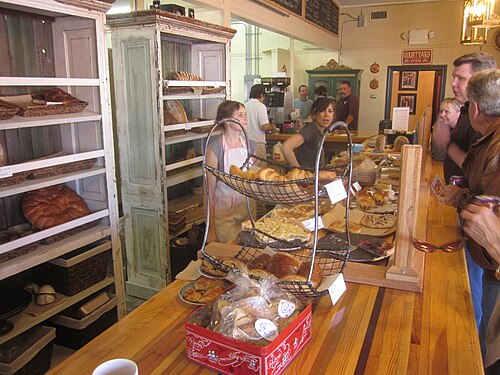
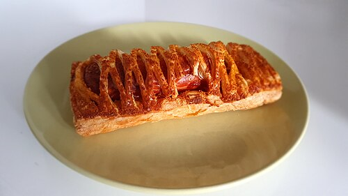
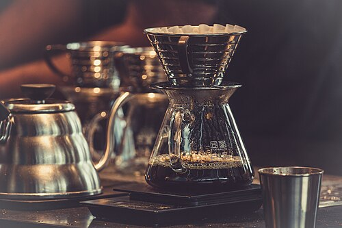
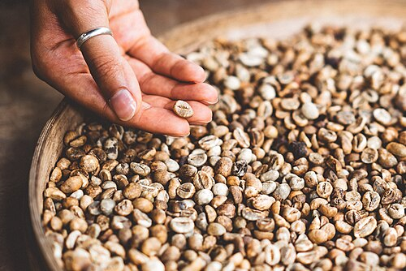

22:00 Uhr1. Der Sauerteig
Opa Heinz’ Roggensauerteig von 1987 wird mit Brandenburger Bio-Vollkornmehl und belebtem Wasser aufgefrischt, um über Nacht lebendige Triebkraft zu entfalten.

Keine Backmischungen. Keine Enzyme. 18 Stunden Teigruhe, reiner Natursauerteig und echtes Steinfeuer mitten im Prenzlauer Berg.
Während die Stadt schläft, vollzieht sich in unserer Backstube das älteste Handwerk der Welt. Fünf Schritte zwischen Mehlstaub und Sonnenaufgang.

22:00 UhrOpa Heinz’ Roggensauerteig von 1987 wird mit Brandenburger Bio-Vollkornmehl und belebtem Wasser aufgefrischt, um über Nacht lebendige Triebkraft zu entfalten.

01:30 UhrJeder Laib wird auf massivem Buchenholz von Hand gewirkt. Bei uns spürt der Bäcker die Teigspannung, nicht eine automatisierte Taktstraße.
In naturbelassenen Weidenkörben ruht der Teig bei kühlen 4 Grad. Die lange Reifezeit baut schwer verdauliche Glutenstrukturen auf natürliche Weise ab.

05:00 UhrDer Schamotte-Stein glüht bei 280 Grad. Mit dem langen Holzschieber werden die Laibe eingeschossen – für die legendär kräftige, dunkle Kruste.

06:30 UhrDie Kastanienallee erwacht. Die heißen Krusten knistern leise beim Abkühlen, während Leyla die Espressomaschine anwirft und die Ladentür aufsperrt.
Herbstliche Aromen, wärmende Gewürze und limitierte Rezepturen. Nur für kurze Zeit in unserer Auslage.

Traditioneller Butterstollen, vier Wochen lang sorgsam gereift in Pfälzer Spätburgunder, mit gerösteten Mandeln und kandierten Bio-Zitronen.
100% Brandenburger Ur-Dinkelmehl, abgerundet mit kaltgeschleudertem Berliner Waldhonig und schonend in der Pfanne gerösteten Sonnenblumenkernen.

Hauchdünner Plunderteig mit geröstetem Hokkaido-Kürbispüree, duftendem Ceylon-Zimt und karamellisierten knusprigen Kürbiskernen.

Zartes Buttermürbegebäck gefüllt mit samtigem Glühweingelee, Kardamom und Nelkenstaub. Von Hand ausgestochen nach altem Familienrezept.
Alle Backwaren werden in handwerklichen Chargen ohne Zusatzstoffe gebacken. Was morgens aus dem Ofen kommt, wandert direkt in die Auslage.
80% Roggen, 20% Weizen, 24h gereifter Natursauerteig, dunkle Steinofenkruste.
Dinkel-Vollkorn mit gerösteten Edelkastanien und einem Hauch Rosmarin.
Mit gerösteten Kürbiskernen, Leinsamen und Sonnenblume überbacken.
Französisches T65 Mehl, 20h kalte Führung, grobporig und splitternde Kruste.
Traditionell handgeschlagen, goldgelb gebacken mit zarter Krume.
Knusprig geröstete Steirische Kürbiskerne innen und außen.
Dicht bestreut mit feinstem Bio-Blaumohn auf knusprigem Weizenteig.
Bayerische Natronlauge, bestreut mit echtem Alpensalz.
27 hauchfeine Schichten französische Süßrahmbutter, luftig gebacken.
Schwedische Art mit frisch im Mörser zerstoßenem Kardamom und Hagelzucker.
Gefüllt mit Valrhona-Edelschokolade und handgerührtem Ceylon-Zimtzucker.
Blechkuchen mit saftigen Brandenburger Zwetschgen und Butterstreuseln.
Überbacken mit herzhaft gereiftem Allgäuer Bergkäse.
Mürbeteigboden mit frischem Winterlauch und geräuchertem Landschinken.
Natives Olivenöl extra, frischer Gartenrosmarin und Kalamata-Oliven.
Feine Bio-Kräuterbratwurst im goldgelben Butterblätterteigmantel.
Gute Brezeln verzeihen keine Hektik. Unser Hefeteig wird am Vortag mit kalter Bio-Vollmilch und bester deutscher Süßrahmbutter geknetet. Anschließend ruht er volle 18 Stunden bei konstant 4 Grad im Reiferaum.
Erst diese lange, kalte Führung spaltet die Getreidestärke natürlich auf, sorgt für den charakteristisch nussigen Malzgeschmack und macht die Krume unvergleichlich saftig. Vor dem Backen kurz in reine Bäckerlauge getaucht und auf Schamotte geschossen – kross an den feinen Ärmchen, wattig-weich im dicken Bauch.
Keine Fabrik, keine anonymen Backstraßen. Hinter jedem Brot stehen drei Menschen, die frühmorgens für Sie aufstehen.
Meister Jonas · Bäcker aus Überzeugung seit 2004. Hört am Klopfen der Kruste, ob das Brot fertig ist.

Leyla · Barista-Herz & guter Geist im Café. Kennt von jedem Stammgast die Bestellung auswendig.

Opa Heinz · Schrieb 1987 das Rezept für den Natursauerteig auf. Kommt noch heute täglich um 6 Uhr vorbei.
Wir backen in ehrlichen, limitierten Mengen. Bestellen Sie Ihr Lieblingsbrot bis 17:00 Uhr am Vortag vor – wir legen es morgens frisch an der Abholtheke für Sie zurück.
Ihre Vorbestellung wurde erfolgreich registriert. Wir backen Ihren Laib in der Nacht frisch für Sie.
Bestellung:
Abholung:
Rückfragen an:
Abholort: Kastanienallee 48, 10119 Berlin
Bezahlung bequem vor Ort in bar oder kontaktlos mit Karte.
Mitten im Prenzlauer Berg, direkt an der Kastanienallee. Treten Sie ein, atmen Sie tief durch und nehmen Sie sich Zeit für guten Kaffee.